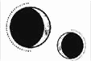

CAPÍTULO 67
Mayus 1789
El tiempo no curó todas sus heridas, pero ayudó a que la mente de Helena mejorara. Sus recuerdos parecieron ir asentándose y comenzaron a ordenarse un poco más cada día que pasaba.
Acabó recordando que había engañado a Kaine y comprendió por fin por qué se había mostrado tan paranoico desde que la habían llevado a la casa. Comprendió por qué había revisado sus recuerdos, ansioso por ver incluso sus rutinas más intrascendentes.
La había subestimado una vez y no iba a volver a confiar en ella nunca más. Así que estaba claro que todavía le estaba mintiendo.
Helena ya lo sospechaba, pero le costaba fiarse de su propio juicio o de su capacidad para interpretar lo que le sucedía. Su mente seguía llena de lagunas. Sus pensamientos todavía tendían a quedarse a medias y su cabeza continuaba dejando escapar detalles importantes. Sin embargo, con el paso de los días, cada vez estuvo más segura de que la engañaba.
Su objetivo era mantenerla tranquila, asegurar un «entorno controlado». Incluso entonces trataba de manipularla. Lo que no conseguía entender era por qué. Le había dado mil vueltas al asunto para tratar de encontrar algún vacío en la narrativa que Kaine había construido desde que había recobrado el conocimiento y que con tanto esmero había creado. Necesitaba perspectiva: distinguir mejor lo que era real de lo que no lo era.
Salió de la habitación y miró a ambos lados. Los pasillos, la casa, el recuerdo asfixiante de la muerte y la pena que lo impregnaba todo solían aterrorizarla, pero se quedó ahí, escudriñando el espacio que la rodeaba y se confundía con las sombras. Al final sí que la estaba atormentando un fantasma.
El suyo propio.
Recorrió el pasillo despacio, con los pies descalzos. El frío suelo de hierro la mantenía anclada al presente, la ayudaba a estar segura de lo que era real.
Kaine apareció en el rellano inferior justo cuando ella llegaba a la escalera. Vestía completamente de negro salvo por el prístino cuello blanco y el borde apenas visible de las mangas de la camisa. El contraste era tan intenso que casi parecía un dibujo hecho a tinta: todo líneas rectas en tonos de blanco y negro.
—Pensé que habrías salido —dijo al ver que él permanecía en silencio.
—Sabía que te habías levantado. ¿Te ves con fuerzas para llegar al ala principal?
No, pero asintió movida por la curiosidad de ver adónde la llevaba.
Kaine mantuvo las distancias con ella de forma deliberada y le advirtió en voz baja de todos los puntos desde los que Morrough podría estar observándolos. Helena no dejaba de mirarlo, de estudiar la tensión que lo encorsetaba y la precisión milimétrica de cada uno de sus movimientos. Era tan riguroso que su actitud casi no parecía humana. Cayó en la cuenta, horrorizada, de que todo era resultado del sello. Kaine estaba más destilado que nunca. Su poder lo había transmutado hasta dejarlo reducido a las cualidades que le confería.
En su intento por encontrarla, había permitido que el sello lo consumiera.
Se habían detenido delante de las imponentes puertas que Helena siempre había encontrado cerradas en sus exploraciones por la casa. Resultó que ocultaban una biblioteca.
—Te habría traído aquí antes, pero me daba miedo que Aurelia empezara a sospechar algo si pasabas demasiado tiempo en esta ala —explicó dando un paso a un lado para dejarla pasar—. Estaré fuera hasta última hora de la tarde, pero he pensado que te vendría bien un incentivo para moverte y pasar el tiempo.
Helena no se movió mientras observaba la enorme sala. En la pared opuesta, había unas cuantas ventanas que daban al norte. Pese a estar a finales de primavera, la luz que iluminaba aquella ala de la casa era débil, los pasillos estaban envueltos en sombras y los techos eran tan altos que casi ni se distinguían. La oscuridad parecía a punto de descender sobre ella y engullirla, de hacerla desaparecer sin más.
—También podría sospechar ahora —señaló sin cruzar el umbral.
—No está aquí. —Helena lo miró sorprendida y Kaine continuó—: Ahora mismo permanece en la ciudad. Dudo que vuelva, pero te avisaré si lo hace.
Helena tragó saliva.
—¿Y si…? ¿Y si volvemos en otro momento?
Era evidente que Kaine había esperado que la biblioteca funcionara como un incentivo para sacarla de su habitación. Al fin y al cabo, Helena había pasado la mayor parte de su cautiverio muerta de aburrimiento y él le estaba ofreciendo ahora un mundo de entretenimiento. Le echó una rápida mirada de arriba abajo.
Helena se humedeció los labios y apoyó la mano en la pared para notar la textura del papel bajo los dedos.
—Es que ahí dentro… está un poco oscuro. Es por el techo. No conviene que me dé un ataque… con lo del… lo del bebé.
Se atragantó con la última palabra. Era la primera vez que mencionaba el tema en voz alta desde que había recobrado el conocimiento. Su mente intentaba por todos los medios dejar a un lado aquella realidad, incapaz aún de asumir sus implicaciones.
Kaine también se estremeció.
—Preferiría no entrar, si no te importa.
—Hel…
Kaine avanzó hacia ella, pero, al ver que se ponía tensa, se detuvo en seco. Se la quedó mirando con una mano apenas extendida. A Helena le ardían las mejillas y tuvo que desviar la mirada.
¿Qué sentiría al tener que lidiar con aquella versión deslucida de ella? Helena ni siquiera recordaba del todo lo que habían vivido juntos, y compararse con su yo del pasado le resultaba insoportable. Le tembló la mandíbula.
—Sé que tenerle miedo a la oscuridad es… irracional. Créeme que lo sé —dijo con la voz entrecortada—. Estoy intentando… Sé…
Kaine salió de la biblioteca y cerró la puerta. A Helena se le cayó el alma a los pies al notar que la distancia que los separaba se ampliaba; no quería que la tocara, pero al mismo tiempo se moría por volver a estar entre sus brazos. Su mente y su cuerpo no dejaban de librar una batalla constante.
Era imposible que Kaine pudiera ocupar ese espacio intermedio. No había distancia que fuera lo bastante grande como para ayudarla a olvidar lo que había pasado ni lo bastante corta como para que él siguiera a su alcance.
—No pasa nada —le dijo sin mirarla—. Pensé que te gustaría, pero no estás familiarizada con este espacio y es normal que te dé miedo. Si quieres algún libro, te lo puedo subir yo a tu habitación. —Helena asintió con rigidez—. Te acompaño arriba.
—No, deberías irte —le dijo ella, presionando la mano contra la pared hasta que el grillete se le clavó en la muñeca—. Te voy a retrasar y sé llegar sola.
Un destello fugaz surcó la mirada de él.
—Como quieras…
Se dio la vuelta y Helena lo sujetó de manera instintiva.
—Kaine… —Cuando se detuvo, ella bajó inmediatamente la mano y esbozó una sonrisa tensa—. Ten cuidado y no mueras.
Kaine permaneció quieto durante un momento mientras la observaba, pero luego volvió a girarse.
—Ya.
Cuando regresó, hacía ya un rato que había caído la noche. Helena estaba sentada en el sofá de su habitación, trazando el diseño de la alfombra con la mirada mientras esperaba. Había pasado todo el día intentando convencerse de la mentira, encajando una y otra vez las piezas del rompecabezas.
Kaine se detuvo en el umbral, sin entrar, como si quisiera dejar claro que solo estaba de visita y que el encuentro sería rápido e impersonal. Helena lo observó con atención. Siempre había tenido esa tendencia a quedarse totalmente inmóvil. Ese detalle sí que lo recordaba.
—¿Sabes ya qué libros quieres que te traiga? —le preguntó al cabo de un rato.
Ella negó con la cabeza.
—Hoy he estado pensando —le dijo, y Kaine arqueó una ceja—. Tu plan no tiene ningún sentido.
—Bueno, no todos contamos con una mente tan brillante como la tuya —respondió él con ligereza, sin moverse de la puerta.
Helena analizó el espacio que los separaba. Si Morrough los observaba, ¿qué vería? Nada. No había nada que ver salvo el vacío que los separaba.
—Hoy no me has dicho que siempre me encontrarías. Solías decírmelo cuando tenía que marcharme. Cuando… —Parpadeó y una de sus manos sufrió un espasmo—. Era así, ¿verdad?
El rostro de Kaine se oscureció cuando entró en la habitación, cerró la puerta y se apoyó contra ella.
—Me parecía una promesa vacía dadas las circunstancias.
Ella negó con la cabeza.
—No fue culpa tuya. Me buscaste por todas partes. Mandl…
Él profirió una carcajada seca, y a Helena le dio un vuelco el corazón.
—Ya, claro, gracias. —Su voz destilaba sarcasmo—. Por todas partes, sí. Moví cielo y tierra para encontrarte, ¿no?
Ella se lo quedó mirando, y, aunque su tono se volvió pensativo, sus ojos permanecieron impasibles y resplandecientes.
—Entre los escombros, entre las pilas de cadáveres, por las prisiones, las minas y los laboratorios, por todo el maldito continente. Te busqué por todas partes, pero pasé por alto el único lugar que debería haber comprobado. —Se le rompió la voz, pero sonrió—. Te agradezco de corazón que valores el excepcional trabajo que hice.
Había algo en la forma en la que hablaba que a Helena le resultaba familiar. Sintió que se le revolvía el estómago y se le nublaba la vista. El rostro de Kaine de pronto apareció ante ella y ya no estuvo tan segura de saber qué estaba viviendo. ¿Era el pasado? ¿El presente? ¿Una combinación de ambos?
Una nueva carcajada la devolvió a la realidad.
La expresión de Kaine se había torcido.
—¿Cómo que no fue culpa mía? —había seguido diciendo, enseñándole los dientes—. ¿Eso es lo que esperas que me diga a mí mismo? —Se llevó una mano pálida al corazón—. ¿Crees que abrazar un eterno victimismo me hará sentir mejor?
Su rabia era tan intensa que parecía llenarlo todo. Helena bajó la vista mientras intentaba mantener la respiración controlada. Había tantas cosas distintas en su cabeza que se esforzaba por ignorar que le costaba mantenerse a flote. Tenía miedo de hundirse en la ciénaga en que se había convertido su propia mente.
Aun así, sabía que Kaine le estaba mintiendo. Estaba decidido a ocultarle algo, empeñado en mantenerla al margen. Helena estaba segura de que lo sabría si tuviera la memoria intacta.
—Pero no iba por ahí. No quiero hablar de eso ahora. Lo que no entiendo es por qué estás dispuesto a quedarte esperando a que me vaya. Si me escapo, Morrough sospechará que lo has traicionado o pensará que le has fallado.
Kaine respiró hondo para tranquilizarse y adoptar una actitud tan certera y cruel como la trampa de un cazador al accionarse.
—Como ya te he dicho, hemos fijado unos plazos muy concretos, pero eso a ti no te concierne.
Estaba intentando herirla para que dejara de hacer preguntas, pero Helena se negó a ceder.
—Si me voy, Morrough sabrá que eres el traidor —insistió con terquedad—. Y, aunque no lo descubra, te echará la culpa por haberme dejado escapar. Está desesperado y este… este bebé es su última esperanza. Si tuvieras una manera de derrocar su régimen, ya lo habrías hecho. A no ser que algo te esté frenando.
Kaine no respondió, así que Helena tomó aire y continuó hablando:
—Coincido contigo en que se respira cierta inestabilidad, pero hay algo que mantiene el plan de Morrough en pie, algo que impide que se desmorone. Y esa es la figura del Sumo Inquisidor. Todo el mundo lo teme y da por hecho que, si algo le pasara a Morrough, sería él quien asumiría el poder. Y ahora ya se sabe que el Sumo Inquisidor eres tú.
»Teniendo todo esto en cuenta, solo se me ocurre una cosa capaz de hacer que Morrough parezca lo bastante débil como para que los demás países se atrevan por fin a atacar.
Kaine se encogió de hombros despreocupadamente.
—No creo que estés lo bastante familiarizada con el clima político actual como para opinar sobre el tema. Que solo se te ocurra una posible explicación no quita que haya otras.
Helena encontró su mirada.
—Entonces ¿por qué no me explicas tu plan? Así sabremos si estoy pasando algo por alto.
Kaine ladeó la cabeza y una expresión gélida y burlona se adueñó de su rostro.
—¿Qué parte de «eso a ti no te concierne» no has entendido? ¿Es que también has olvidado el significado de esa expresión? ¿Quieres que te traiga un diccionario?
A Helena se le formó un nudo en la garganta y notó cómo se le crispaban los dedos. Kaine siempre se mostraba más cruel cuando se sentía vulnerable.
—Si hubieras encontrado la manera de debilitarlo o matarlo, ya lo habrías hecho —dijo encontrando su mirada—. Habrías… —Se le cerró la garganta—. Yo no estaría… embarazada. Eso significa que hay algo que te impide actuar. Y ese algo soy yo, ¿no es así? Estás esperando a que me vaya, porque para entonces ya estarás muerto y dará igual que Morrough descubra que tú eres el traidor. Porque la única manera de debilitar a Morrough es dejarlo sin su Sumo Inquisidor.
Kaine permaneció inmóvil, pero, al cabo de unos segundos, su fachada se desmoronó y dejó escapar un largo suspiro.
—Tenía la esperanza de que la biblioteca te mantuviera ocupada durante una semana como mínimo —admitió con expresión agotada.
Helena esperó a que se explicara, pero no dijo nada más.
—¿Ese es tu plan? —preguntó con voz aguda y temblorosa por la incredulidad—. Después de todo este tiempo, ¿vas y acabas recurriendo al mismo plan de siempre? ¿De verdad creías que iba a acceder a que me escondieras en algún lado mientras tú te sacrificabas?
Kaine dejó escapar una risita grave, cuya vibración Helena notó en los huesos.
—No me digas que esta vez también tienes una solución mejor —susurró—. Al fin y al cabo, tú no has experimentado todos los horrores que te imaginé sufriendo a lo largo de estos meses. Solo te perdí y pasé catorce meses buscándote sin éxito. Solo te he encontrado rota y torturada. Solo te he mantenido prisionera, te he sometido a la transferencia y te he violado… —La rabia y el dolor le quebraron la voz. Su piel había palidecido, había adoptado un tono blanco resplandeciente y abrasador—. ¿No te parece suficiente? Está claro que nuestra situación aún puede empeorar hasta límites insospechados. ¿Quieres que lo intentemos?
Helena permaneció en silencio. Había tanto que quería decirle que le resultaba imposible decidir por dónde empezar y cómo organizar toda aquella información. Su mente, limitada, no podía contener tantas ideas. Si se forzaba demasiado, se rompería.
Kaine exhaló con brusquedad. Su expresión era ilegible, pero el brillo de antes se había desvanecido y le temblaba la barbilla.
—No puedo hacer más, Helena, lo siento. Ya sé que para ti nunca ha sido suficiente.
—Kaine… —dijo ella con la voz entrecortada.
Él suspiró y apoyó una mano en el marco de la puerta como si lo necesitara para mantenerse en pie.
—Sé que quieres salvar a todo el mundo, como siempre, pero, por desgracia, yo no dispongo de ese talento. Al menos, así verás el fin de la guerra. Eso sí que puedo asegurártelo.
—¡No! —replicó ella con brusquedad.
Kaine la miró y su rostro se endureció.
—Siempre has dicho que jamás me pondrías por delante de la Resistencia y la Llama Eterna. Y yo estoy atado a un barco que se está yendo a pique. No pienso arrastrarte conmigo.
—¡Mentía! —gritó ella—. No… No podía… No iba a… a…
Jadeó en busca de aliento y se agarró el pecho. El ritmo de sus latidos era tan irregular que le impedía respirar. Se presionó el esternón e ignoró el dolor que le subía por el brazo mientras todo a su alrededor daba vueltas.
La rabia en la expresión de Kaine desapareció. Se acercó con cautela y se arrodilló ante ella como si fuera un animalillo asustadizo. La sujetó por los hombros y la mantuvo erguida.
—Helena…, respira. Por favor, tienes que respirar.
Recordaba aquella mirada suplicante. Lo recordaba justo así. En algún momento habían estado exactamente en esa misma situación. Helena se había aferrado a sus hombros y había apoyado la frente contra la suya.
—Por favor, respira —repetía una y otra vez mientras el peso de sus manos sobre los hombros la ayudaba a mantenerse anclada al presente, hasta que su pecho dejó de estremecerse.
—Tiene que haber otra manera —dijo ella cuando logró recuperar la voz—. Dijimos que huiríamos juntos, ¿recuerdas? ¿Por qué no puedes venir conmigo? El otro día me comentaste que habías salido de Paladia. Podríamos marcharnos y buscar una manera de revertir lo que Morrough te hizo. Los países vecinos se encargarán de él si tú desapareces de la ecuación. ¿Por qué no podemos hacerlo así?
—Ya te habría llevado lejos de aquí si hubiera podido. Morrough me permitió llevarme mi filacteria para darles caza a los fugitivos, pero… empezó a sospechar de mí el año pasado. Por eso tiene que ser Shiseo quien se encargue de ayudarte a escapar.
Helena negó con la cabeza.
—No…
Kaine le tomó la mano.
—No sé si te acuerdas, pero me prometiste que harías lo que te pidiera si salvaba a Bayard por ti. Bueno, pues esto es lo que quiero a cambio. Quiero que dejes este maldito país atrás y empieces una nueva vida muy lejos de aquí. Le prometiste a Holdfast que protegerías a Lila y a su heredero. Espero que esa promesa te mantenga ocupada durante mucho tiempo.
—Pero prometí cuidar de ti primero —replicó ella retirando la mano—. Siempre. Te prometí que siempre te cuidaría. Si todo hubiera salido como tenías planeado, me habrías enviado lejos sin que yo me acordara siquiera de ti. No habría entendido nada hasta que fuera demasiado tarde…
—Bueno —dijo él con voz estrangulada—, la última vez que me sinceré contigo, desapareciste para no volver.
Helena se encogió como si la hubiera golpeado y se le volvió a entrecortar la respiración.
—Pero lo intenté. Cuando me atraparon estaba… estaba volviendo a por ti. Intenté…
—Lo sé. Si lo que dicen los informes es cierto, te defendiste con uñas y dientes. Si no te hubieras fijado en mi padre, habrías tenido la oportunidad de escapar. Sé que lo intentaste. —Dio un paso atrás—. Pero no fue suficiente. No pudiste hacer más.
Helena lo agarró para que no se alejara, para que mantuviera su rostro cerca del suyo.
—Pero ¿y si hubiéramos estado ahí juntos? Si hubiésemos trabajado en equipo para salvar a Lila, la situación podría haber sido distinta. ¿Por qué no lo intentamos ahora?
Una expresión que no alcanzó a reconocer cruzó el rostro de Kaine, que se la quedó mirando con el ceño fruncido. Helena comprendió que su pregunta era absurda porque ya no era la misma persona de entonces; de hecho, era poco más que una sombra de quien había sido.
Kaine bajó la vista.
—Nos espera una larga despedida y no quiero pelear contigo, pero no pienso hacer nada que pueda ponerte en peligro.
—Déjame buscar otra solución. Si me pongo a investigar, tal vez encuentre algo que hasta ahora hayamos pasado por alto.
Kaine permaneció callado mientras sopesaba los posibles riesgos, pero al final suspiró.
—Accederé con dos condiciones. Tendrás que parar si el estrés hace que tu salud empeore. Y, cuando Shiseo venga a por ti, te irás con él sin rechistar, independientemente de lo cerca que creas estar de descubrir algo o encontrar una respuesta. No volverás a engañarme o a manipularme. Nos despediremos y te marcharás. —Encontró su mirada—. ¿Te parece bien?
Helena tragó saliva con fuerza.
—Con una condición.
—¿Cuál? —preguntó él apretando los dientes.
—Que no me mientas más. No quiero pasarme los días dándole vueltas a lo que me cuentas sin saber si es verdad o no.